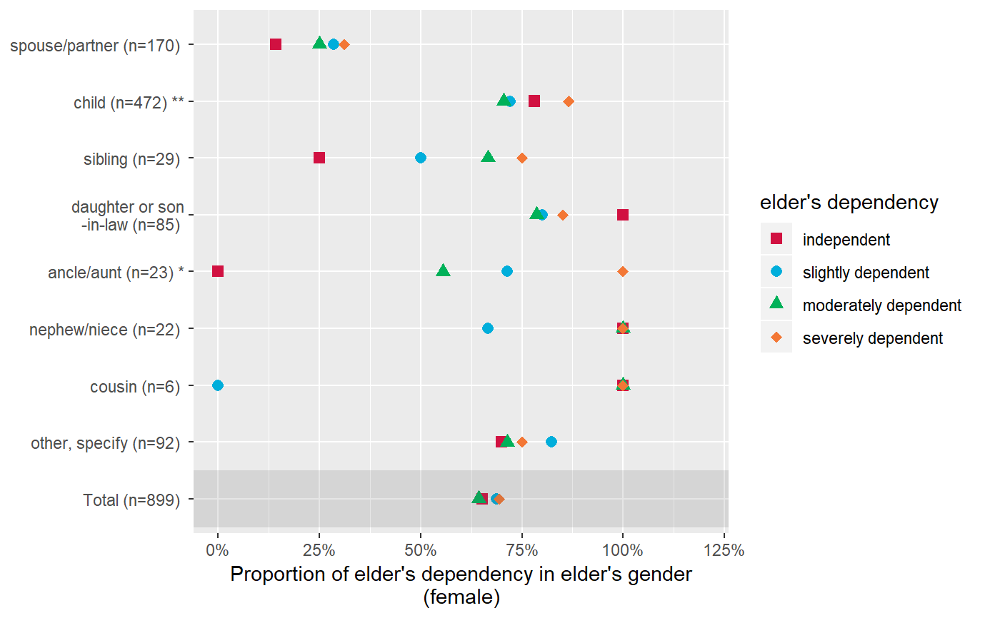
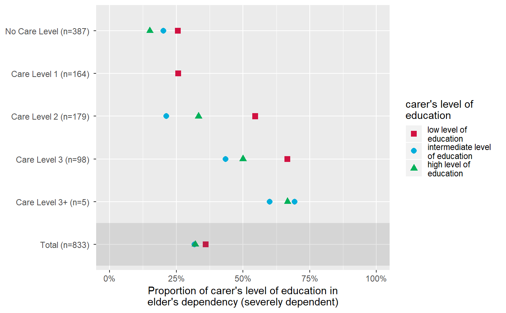

plot_gpt.RdPlot grouped proportional crosstables, where the proportion of
each level of x for the highest category in y
is plotted, for each subgroup of grp.
plot_gpt(data, x, y, grp, colors = "metro ui", geom.size = 2.5, shape.fill.color = "#f0f0f0", shapes = c(15, 16, 17, 18, 21, 22, 23, 24, 25, 7, 8, 9, 10, 12), title = NULL, axis.labels = NULL, axis.titles = NULL, legend.title = NULL, legend.labels = NULL, wrap.title = 50, wrap.labels = 15, wrap.legend.title = 20, wrap.legend.labels = 20, axis.lim = NULL, grid.breaks = NULL, show.total = TRUE, annotate.total = TRUE, show.p = TRUE, show.n = TRUE)
| data | A data frame, or a grouped data frame. |
|---|---|
| x | Categorical variable, where the proportion of each category in
|
| y | Categorical or numeric variable. If not a binary variable, |
| grp | Grouping variable, which will define the y-axis |
| colors | May be a character vector of color values in hex-format, valid
color value names (see
|
| geom.size | size resp. width of the geoms (bar width, line thickness or point size, depending on plot type and function). Note that bar and bin widths mostly need smaller values than dot sizes. |
| shape.fill.color | Optional color vector, fill-color for non-filled shapes |
| shapes | Numeric vector with shape styles, used to map the different
categories of |
| title | Character vector, used as plot title. By default,
|
| axis.labels | character vector with labels used as axis labels. Optional argument, since in most cases, axis labels are set automatically. |
| axis.titles | character vector of length one or two, defining the title(s) for the x-axis and y-axis. |
| legend.title | Character vector, used as legend title for plots that have a legend. |
| legend.labels | character vector with labels for the guide/legend. |
| wrap.title | Numeric, determines how many chars of the plot title are displayed in one line and when a line break is inserted. |
| wrap.labels | numeric, determines how many chars of the value, variable or axis labels are displayed in one line and when a line break is inserted. |
| wrap.legend.title | numeric, determines how many chars of the legend's title are displayed in one line and when a line break is inserted. |
| wrap.legend.labels | numeric, determines how many chars of the legend labels are displayed in one line and when a line break is inserted. |
| axis.lim | Numeric vector of length 2, defining the range of the plot axis.
Depending on plot type, may effect either x- or y-axis, or both.
For multiple plot outputs (e.g., from |
| grid.breaks | numeric; sets the distance between breaks for the axis,
i.e. at every |
| show.total | Logical, if |
| annotate.total | Logical, if |
| show.p | Logical, adds significance levels to values, or value and variable labels. |
| show.n | logical, if |
A ggplot-object.
The p-values are based on chisq.test of x
and y for each grp.
data(efc) # the proportion of dependency levels in female # elderly, for each family carer's relationship # to elderly plot_gpt(efc, e42dep, e16sex, e15relat)# proportion of educational levels in highest # dependency category of elderly, for different # care levels plot_gpt(efc, c172code, e42dep, n4pstu)